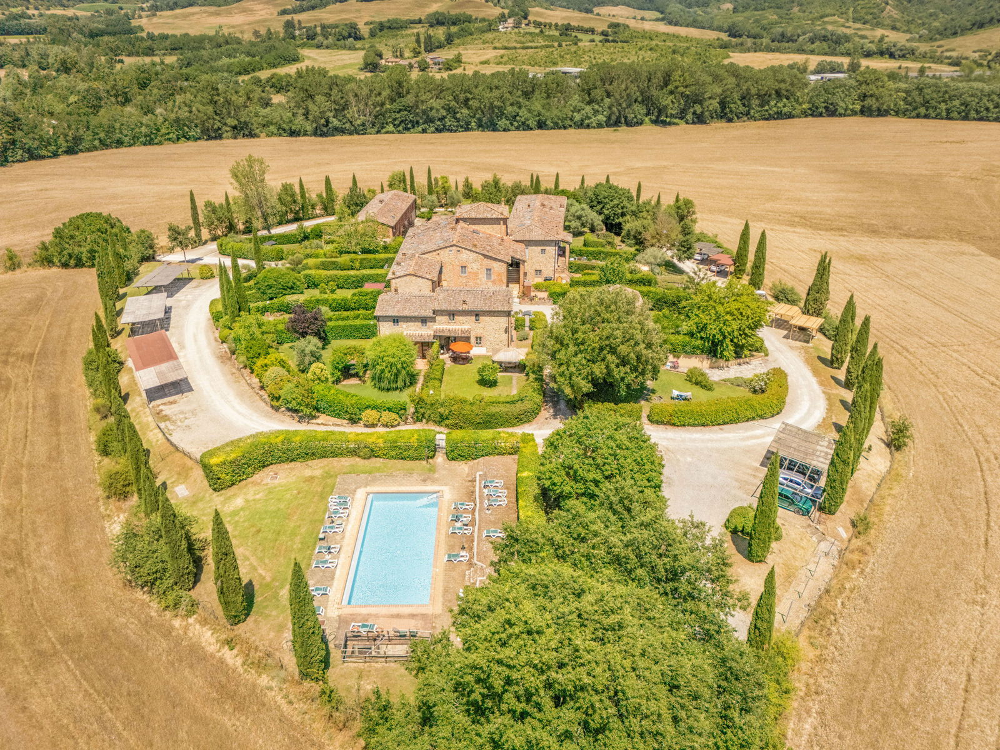

€595.000
Crete Senesi (Siena) · Tuscany · Italy
Exact brief in the Crete Senesi: restored historic-hamlet bones with terracotta floors and Tuscan tradition, mixed with modern comfort, plus a private pool and garden hot tub at €595k. Rare character-forward package well under €750k.
Opened 18 Sep 2026 on Engel & Völkers Siena; asking €595.000; 201 m² / 4 bed / 3 bath / land 1.100 m²; hasSwimmingPool true; ACTIVE. Historic hamlet setting confirmed in body. Photos verify terracotta floors, beams, private pool and hot tub.
Open listing